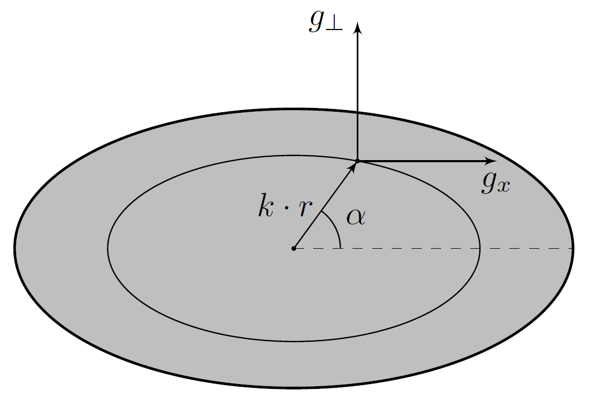
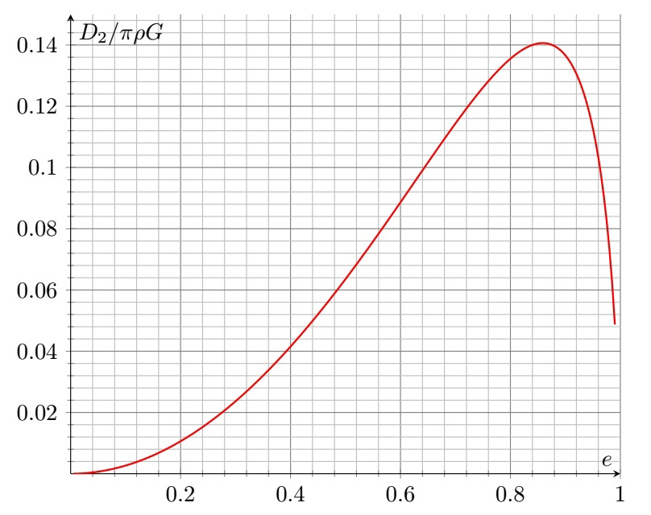
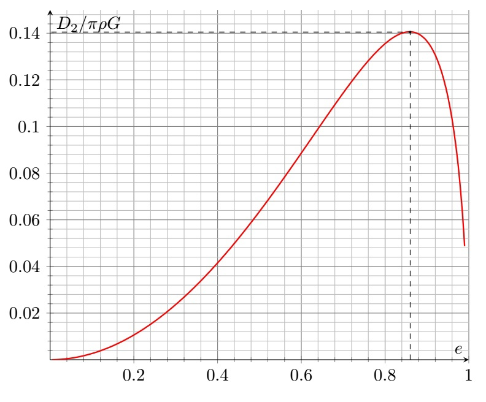

Y22 (2022) — English translation
Let $\omega$ be the angular velocity of rotation of the system. Then from the theorem on the motion of the center of mass we obtain: $$2m\omega^2R=GMm\left(\displaystyle\frac{1}{(R-r)^2}+\displaystyle\frac{1}{(R+r)^2}\right) $$ Consider отдельном condition движения центра ближнего объекта по окружности radiusа $R-r$: $$m\omega^2(R-r)=\displaystyle\frac{GMm}{(R-r)^2}+N-\displaystyle\frac{Gm^2}{4r^2} $$ Комбинируя, we find: $$N=\displaystyle\frac{Gm^2}{4r^2}+\displaystyle\frac{GMm}{2R}\left(\displaystyle\frac{R-r}{(R+r)^2}-\displaystyle\frac{R+r}{(R-r)^2}\right) $$ Taking into account that $R_0\gg{r}$, we find: $$N\approx{\displaystyle\frac{Gm^2}{4r^2}-\displaystyle\frac{3GMmr}{R^3}} $$ Force механического взаимодействия между объектами неотрицательна for/at $$R\geq{r\sqrt[3]{\displaystyle\frac{12M}{m}}} $$ Then for $R_{DPS}$ we have:
The orbital angular velocity of the satellite $\omega$ is equal to $$\omega=\sqrt{\cfrac{GM}{R^3}} $$ where $M=\cfrac{4\pi R^3_0\rho_M}{3}$. Potential energy частицы массой $m$ в поле центробежной силы (считаем её equalsй нулю на оси вращения) equals $$W_p=-\frac{m\omega^2r^2_{\perp}}{2} $$ where $r_{\perp}$ - distance от частицы до оси вращения. Then for potentialа we have: $$\varphi=-\cfrac{4\pi R^3_0\rho_MG}{3R}\left(\cfrac{R}{r}+\cfrac{r^2_\perp}{2R^2}\right)-\varphi_O $$ from where:
For the expansion of $\cfrac{R}{\sqrt{(R+x)^2+y^2+z^2}}$ we have: $$\cfrac{R}{\sqrt{(R+x)^2+y^2+z^2}}\approx{1-\frac{x}{R}-\frac{x^2+y^2+z^2}{2R^2}}+\frac{3x^2}{2R^2} $$ Substituting в expression for $\varphi$, we get: $$\varphi=-\cfrac{2\pi R^3_0\rho_MG}{R^3}x^2+\cfrac{2\pi R^3_0\rho_MG}{3R^3}z^2 $$ Thus:
Let us turn to the proof of equality to zero in the cavity of the ball concentric to it. Let us consider some point of the cavity $A$. Let us select two elementary volumes $dV_1$ and $dV_2$, the fields of which compensate each other: $$\frac{dV_1}{r^2_1}=\frac{dV_2}{r^2_2} $$ Произвольных эллипсоид может быть поrayен сжатием from сферы вдоль взаимно перпендикулярных осей. Since volume любого элементарного vaporаллелепипеда $dV=dxdydz$, all elementary volumes decrease by the same number of times. The ratios of distances between points will also be preserved. Then, since the total gravitational field inside the cavity of the ball is zero, the gravitational field inside the cavity of the ellipsoid is also equal to zero.
Consider the points $1$ and $2$ lying on the same straight line passing through the center of the ellipsoid. Let the distances from the center of the ellipsoid to these points be equal to $r_1$ and $r_2$, respectively, and the straight line under consideration makes an angle $\alpha$ with the axis $x$. Both points belong to the boundaries of ellipsoids similar to the one under consideration with some coefficients $k_1$ and $k_2$. Since the gravitational field inside ellipsoidal cavities is zero, the potential difference between the point $1$ and the center of the ellipsoid in question $\varphi_1-\varphi_0=f(\alpha)r^2_1$, as well as $\varphi_2-\varphi_0=f(\alpha)r^2_2$, where $f(\alpha)$ is a certain function depending only on the angle $\alpha$. From here we find:
The distances $r$ can be arbitrarily small. Let's consider points close to the center of the ellipsoid. For them: $$\vec{g}=\frac{\partial\vec{g}}{\partial x}dx+\frac{\partial\vec{g}}{\partial y}dy+\frac{\partial\vec{g}}{\partial z}dz $$ where все производные берутся в начале координат. Since эллипсоид - симметричная фигура for точек лежащих на осях $x$, $y$ and $z$ true соответственно. $$\frac{\partial\vec{g}}{\partial x}=\frac{\partial g_x}{\partial x}\vec{e}_x\quad\frac{\partial\vec{g}}{\partial y}=\frac{\partial g_y}{\partial y}\vec{e}_y\quad\frac{\partial\vec{g}}{\partial z}=\frac{\partial g_z}{\partial z}\vec{e}_z $$ hence let us find: $$\frac{\partial g_r}{\partial r}=-2f(\alpha)=(\vec{e}_r\cdot{\vec{e}_x})\frac{\partial g_x}{\partial x}\frac{\partial x}{\partial r}+(\vec{e}_r\cdot{\vec{e}_y})\frac{\partial g_y}{\partial y}\frac{\partial y}{\partial r}+(\vec{e}_r\cdot{\vec{e}_z})\frac{\partial g_z}{\partial z}\frac{\partial z}{\partial r} $$ Let $g_\perp$ - компонента гравитационного поля эллипсоида, перпендикулярная оси $x$.
Considering that for an ellipsoid of revolution $\cfrac{\partial g_y}{\partial y}=\cfrac{\partial g_z}{\partial z}=\cfrac{\partial g_\perp}{\partial r_\perp}$, we obtain $$-2f(\alpha)=\frac{\partial g_x}{\partial x}\cos^2\alpha+\frac{\partial g_\perp}{\partial r_\perp}\sin^2\alpha $$ Since соratio true for любых $\alpha$, all partial derivatives must remain constant at any point of the ellipsoid. Substituting into the expression for the potential, we find:

From Gauss’s theorem in differential form we find: $$\frac{\partial g_x}{\partial x}+\frac{\partial g_y}{\partial y}+\frac{\partial g_z}{\partial z}=-2A_2-4B_2=-4\pi G\rho $$ from where:
$$y^2+z^2=a^2(1-e^2)-(1-e^2)x^2 $$ hence: $$\varphi=\varphi_0+\left(\pi\rho G-\cfrac{A_2}{2}\right)a^2(1-e^2)+\left(\cfrac{A_2(3-e^2)}{2}-\pi\rho G(1-e^2)\right)x^2 $$
Let's split the disk into rings: $$\varphi_\text{д}=-\pi\sigma G\int\limits_0^R\frac{2rdr}{\sqrt{r^2+x^2}} $$
Let's divide the ellipsoid into disks, taking into account that $d\sigma=\rho dx$: $$\varphi_0=-2\pi\rho G\cdot{2\int\limits_{0}^a\left(\sqrt{x^2+y^2+z^2}-x\right)dx} $$ Интеграл от второго слагаемого equals $-\cfrac{a^2}{2}$. Substituting $y^2+z^2$ from the equation эллипсоида: $$\varphi=2\pi\rho Ga^2-4\pi\rho G\int\limits_{-a}^a\sqrt{b^2+\frac{c^2x^2}{a^2}}dx=2\pi\rho Ga^2-\frac{4\pi\rho G ab^2}{c}\int\limits_0^{\frac{c}{b}}\sqrt{1+t^2}dt $$ Let us use первообсной: $$\varphi_0=2\pi\rho Ga^2-\frac{2\pi\rho G ab^2\left(\cfrac{ac}{b^2}+\ln\left(\cfrac{a+c}{b}\right)\right)}{c} $$ Let us express it through eccentricity:
Let's again divide the ellipsoid into disks: $$\varphi_a=-2\pi\rho G\int\limits_{-a}^{a}\left(\sqrt{(a+x)^2+y^2+z^2}-(x+a)\right)dx $$ Интеграл от второго слагаемого equals $-2a^2$. Substituting $y^2+z^2$ from the equation эллипсоида and transforming: $$\int\limits_{-a}^{a}\sqrt{(a+x)^2+y^2+z^2}dx=\int\limits_{-a}^{a}\sqrt{\left(\frac{cx}{a}+\frac{a^2}{c}\right)^2-\frac{b^4}{c^2}}dx=\frac{ab^4}{c^3}\int\limits_{\frac{a^2-c^2}{b^2}}^{\frac{a^2+c^2}{b^2}}\sqrt{t^2-1}dt= $$ $$=\frac{a^2(1-e^2)^2}{e^3}\int\limits_{1}^{\frac{1+e^2}{1-e^2}}\sqrt{t^2-1}dt=a^2\left(\frac{(1+e^2)}{e^2}-\frac{(1-e^2)^2}{e^3}\ln\sqrt{\frac{1+e}{1-e}}\right) $$ from where:
$$\varphi_a-\varphi_0=A_2a^2=2\pi\rho Ga^2\left(\frac{1-e^2}{e^3}\ln\sqrt{\frac{1+e}{1-e}}-\frac{(1-e^2)}{e^2}\right) $$ from
Let's substitute $A_2$ into the expression for $D_2$: $$D_2=\pi\rho G~\frac{1-e^2}{e^3}\left((3-e^2)\ln\sqrt{\frac{1+e}{1-e}}-3e\right) $$

When the function $D_2$ reaches its maximum, a further decrease in the radius of the circular orbit is impossible, so the satellite is destroyed. The thought of solving an equation for a zero derivative is not reasonable.
From the graph we find:

The value of $D_2$ at the extremum is equal to $$D_{2_{max}}\approx{0,14\pi\rho_m G} $$ from where: